进阶指南
这一章是Vallotton的进阶使用教程，介绍各个界面怎么用，以及资料库、反思、连续生成等功能。如果你还没有用过Vallotton，建议先看快速上手，画出第一幅画以后再来看这个教程。各小节基本上是独立的，你可以只挑需要的看。
核心工作界面
核心工作界面是你平时画图的地方，用起来和ChatGPT这类AI聊天应用差不多。在Vallotton中点进任意一个对话即可进入工作界面，窗口分成左、中、右三栏，底部是输入框。
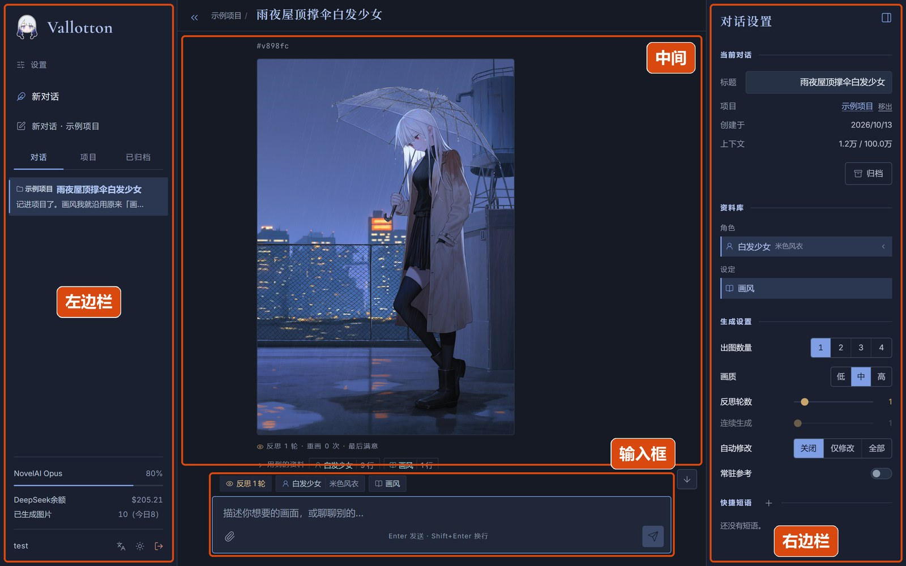
| 位置 | 用途 |
|---|---|
| 左边栏 | 最上面是设置页的入口和「新对话」按钮。下面有三个标签，对应三种查看对话的方式：「对话」按时间列出所有对话；「项目」按项目分类列出，见项目界面；「已归档」列出收起来的对话。左边栏底部显示NovelAI和DeepSeek的余额、一共画了多少张图等信息，以及用户名和三个按钮：切换语言、切换配色、退出登录。 |
| 中间 | 对话本身，包括你说的话、Vallotton的回复、画出来的图等。 |
| 右边栏 | 当前这个对话的设置，包括标题、可以用的资料库条目、生成设置、快捷短语等，见右边栏。右上角的按钮可以收起或者打开右边栏。 |
| 输入框 | 在这里输入你想画的东西，按Enter发送，按Shift+Enter换行。左下角的回形针按钮用来添加参考图。输入框上方的一排标签显示这个对话正在用的资料库条目和生成设置。 |
画好的图
画好的图会出现在Vallotton的回复里。图的上方有一行以#开头的编号，你可以用这个编号来指定某一张图，例如「把#h97jut的伞换成红色」。
你发的消息可以是画一张新图，也可以是修改已经画好的图，Vallotton会根据你的话自己判断是哪一种。如果没有指定编号，那么修改的就是最近画的那张图。修改出来的图，编号后面会标着「改自」和原图的编号。
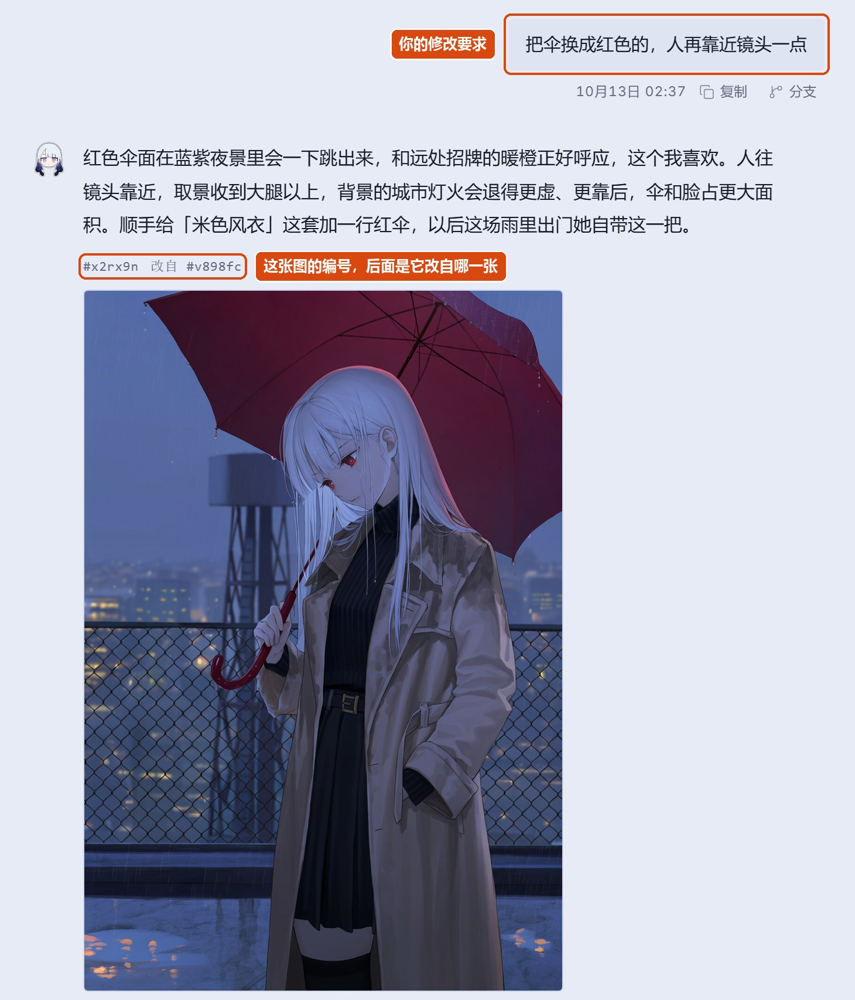
每张图的下面依次是：
- 反思结果：只有开了反思功能才会有，写着反思了几轮、重画了几次，见反思。
- 用到的资料：这张图用到了资料库里的哪些条目；点开以后可以看到每个条目在这张图里实际用了哪些tag，见资料库。
- NovelAI prompts：发给NovelAI的提示词。默认是折叠的，点开可以查看，旁边的按钮可以复制它。
- 生成时间和几个按钮。按钮的用途见下表。
| 按钮 | 用途 |
|---|---|
| 重绘 | 用同样的提示词再画一次，只换一个随机结果。适合构图已经满意、但是想让细节再碰碰运气的时候。 |
| 复制 | 复制这条回复的文字。 |
| 分支 | 从这条消息开始，复制出一个新的对话。新对话里有这条消息和它之前的全部内容，但是不带它之后的内容，资料库也会回到当时的样子。适合想从某个满意的地方换个方向试试、又不想动原来的对话的时候。 |
| 重跑 | 把这条回复整个重新生成一遍，原来的回复会被替换掉。只有最新的一条回复有这个按钮。 |
| 检查 | 查看这一轮的全部细节，见检查器。 |
正在画图的时候，输入框右下角的发送按钮会变成停止按钮，点它就会停下。如果一次要画好几张，那么还会多出一个「停下，保留现在这张」按钮：已经画好的图留下，剩下的不再画了。
大图和主图
点一下图片可以打开大图。在大图里可以左右切换这个对话里的所有图。底部写着这是第几张、图片尺寸、随机种子等信息，旁边有三个按钮：设为主图、下载原图、加入参考图。
如果在生成设置里把「出图数量」调到2到4，那么一次就会画好几张图，每张都不太一样。这时你可以在大图里把最满意的一张「设为主图」，之后再让Vallotton修改时，改的就是这一张。如果没有选过，那么第一张就是主图。
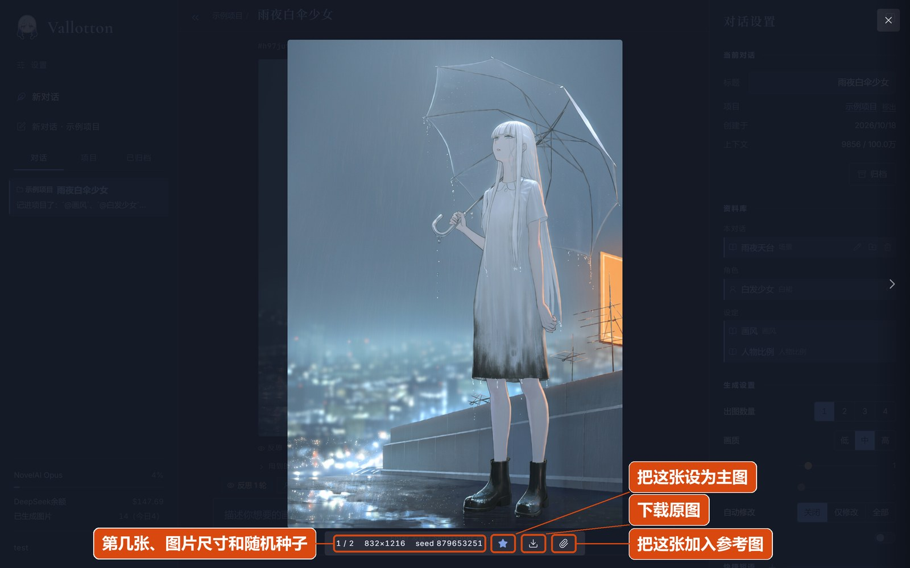
输入框和参考图
你可以给消息附上参考图，告诉Vallotton你想要什么样的画风、人物、构图等，例如「照着这张的画风画」「人物长这个样子」。添加参考图时，点输入框左下角的回形针按钮，或者直接把图片拖进输入框都可以。一条消息最多附6张图，每张不超过15 MB。
画好的图也可以拿来当参考图：在大图里点「加入参考图」，这张图就会出现在输入框里。需要注意的是，Vallotton不会在参考图上直接修改，参考图只是给它看的样子。
默认情况下，参考图只对附上它的那条消息有效。如果希望之前附上的参考图一直有效，那么可以打开右边栏生成设置里的「常驻参考」，之后每条消息都会带上之前附上的所有参考图，最多6张。
输入框上方的那排标签显示这个对话现在用着的资料库条目，以及开着的反思、连续生成、常驻参考等功能。把鼠标停在标签上，可以看到它的详细内容；点一下标签会打开右边栏。
右边栏
右边栏是当前这个对话的设置，从上到下分成四块：
- 当前对话：对话的标题（可以直接改）、属于哪个项目、什么时候创建的，以及上下文（长度）等信息。
- 资料库：这个对话可以用的所有条目，点一下条目就能挂上或者取下，见挂上和取下。
- 生成设置：这个对话画图时用的设置，见生成设置。
- 快捷短语：预先写好的常用句子，见连续生成和快捷短语。
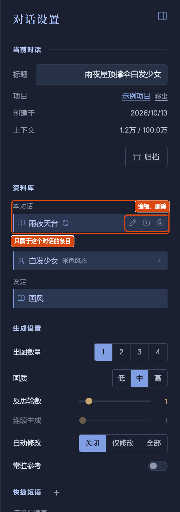
资料库
资料库是Vallotton用来记住人物、衣服、画风等设定的地方。如果只靠模型自己记，那么同一个人物在不同的图里很容易长得不一样，衣服的细节也会变来变去。有了资料库以后，Vallotton每次画这个人物都会照着记下来的内容画，所以人物和画风能在很多张图里保持一致，你也不用每次都重新描述一遍。
平时你不需要专门去维护资料库：新出现的人物、定下来的画风等，Vallotton都会自己记下来；如果你说「给她换一件红毛衣」，它也会顺手更新记录。当然，你也可以随时自己修改资料库。
条目
资料库里的每一项叫一个条目。条目分三种：
- 设定
- 画风、人物比例、反复出现的场景、背景设定（比如「一直在下雨」）等。
- 角色
- 一个人物不随衣服改变的部分：性别、头发、眼睛、肤色、有没有痣或者疤等。
- 变体
- 角色的一套衣服、配饰、姿势、表情等。一个角色可以有好几个变体，换一套衣服不会影响长相。
每个条目有四部分：
- 注释：用自然语言写的说明，给你和Vallotton看，不会发给NovelAI。性格、来历等画不出来的东西可以写在这里。
- 正面tag：用NovelAI认识的英文关键词写下的样子，比如
black hair, short hair, green eyes。画图时发给NovelAI的就是这些。 - 负面tag：这个条目不想画出来的东西，比如成年角色的负面tag里可以写
child。 - 描述：一两句英文，补充tag说不清的东西，比如发髻在脑后还是头顶、耳环戴在哪只耳朵等。
角色「小满」
注释 二十出头的女生，黑色短发，绿眼睛，左眼下有一颗泪痣
正面 1girl, young adult, black hair, short hair, green eyes, mole under eye
描述 The mole sits just under her left eye.
变体「校服」
正面 white sailor shirt, navy sailor collar, navy pleated skirt, brown loafers, black knee socks画图的时候，Vallotton会把这一张要画的人物、变体和设定条目整个交给绘图模型。绘图模型照着条目里的tag写提示词，所以记下来的人物不会越画越走样；它也会按这一张的镜头取舍，比如画脸部特写时不写鞋子，并且给人物加上这一张的姿势和表情。条目里没有写的东西，每张图都可能不一样。
条目的内容可以随时修改。在右边栏点条目旁边的编辑按钮，可以修改它的名字、注释、正面tag、负面tag和描述。如果只改了注释，那么Vallotton会在一两分钟内根据新的注释自动改写tag和描述，并且保留你自己写的、注释没有改到的tag。如果你自己写tag，那么有几点建议：
- 把颜色、材质、长短、位置等会影响画面的地方写清楚，比如泪痣要写明是在左眼还是右眼。
- 变体里从头到脚的每一件衣服都写上，哪怕这次只画到膝盖。如果有哪一件没写，那么它在每张图里都可能不一样。
- 用NovelAI认识的写法，比如
short hair而不是hair is short。拿不准的时候可以问Vallotton，它会查标签表。
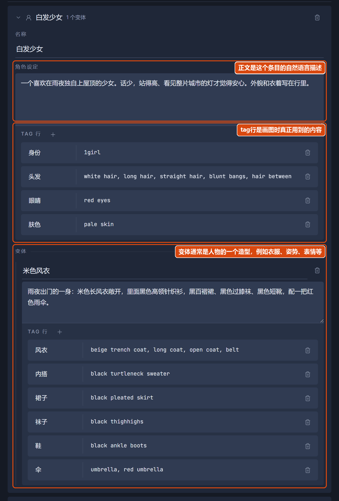
挂上和取下条目
资料库里的条目要先挂在对话上，Vallotton才能看到它，并在画图时用上。在右边栏的资料库里，点一下设定条目就能挂上或者取下它；角色条目则要先点开，再点选它的某一个变体，此时挂上的就是这个角色的这个变体（例如，穿着这套衣服）的样子。挂上了的条目会以标签的形式显示在输入框上方。
Vallotton在这个对话里新记下的条目会自动挂上。没有挂上的条目，Vallotton看不到，也不会用：项目里的条目，要在这个对话里用的话，需要你自己挂上。如果某个条目在这个对话里用不着，那么可以把它取下来。
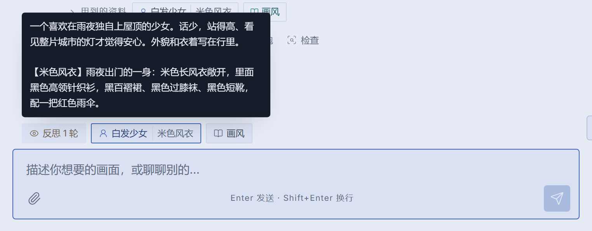
项目
对话多了以后，你可以用项目把它们分类整理。项目就像文件夹，里面可以放对话，也可以再放子项目。
项目更重要的用处是共享资料库。上一节说的资料库默认只属于当前这个对话，换一个对话就要重新记一遍。而每个项目都有自己的资料库，项目资料库里的人物和设定，可以被这个项目里的所有对话使用。比如说，如果你在画一个连载的故事，那么就可以为它建一个项目，把主角记进项目的资料库，之后在这个项目里新开的每个对话都能画出同一个主角。
资料库的层次结构
所以资料库其实分两层：一层只属于当前这个对话，界面上标着「本对话」；另一层属于项目，这个项目里的所有对话都能用。
- Vallotton在对话里记下的东西默认放在「本对话」这一层。在输入框上方的标签栏中，本对话的条目显示为蓝绿色的标签，项目的条目显示为深灰色的标签。在右边栏里，本对话的条目列在「本对话」下面，其中你自己建的条目旁边有一个铅笔图标。
- 如果想让项目里的其他对话也能用某个条目，那么可以在右边栏点它旁边的「存到项目」按钮，或者直接跟Vallotton说「记进项目」。对话要先放进一个项目里，才能让Vallotton编辑项目资料库。
- Vallotton想往项目层资料库里写东西时需要先征求同意。这一轮结束以后，对话里会出现一张卡片，列出它想写进去的每个条目：注释、正面tag（+）、负面tag（−）和描述。点了「写入资料库」才会写入项目资料库。如果不想每次都确认，那么可以调整生成设置里的「自动修改」。
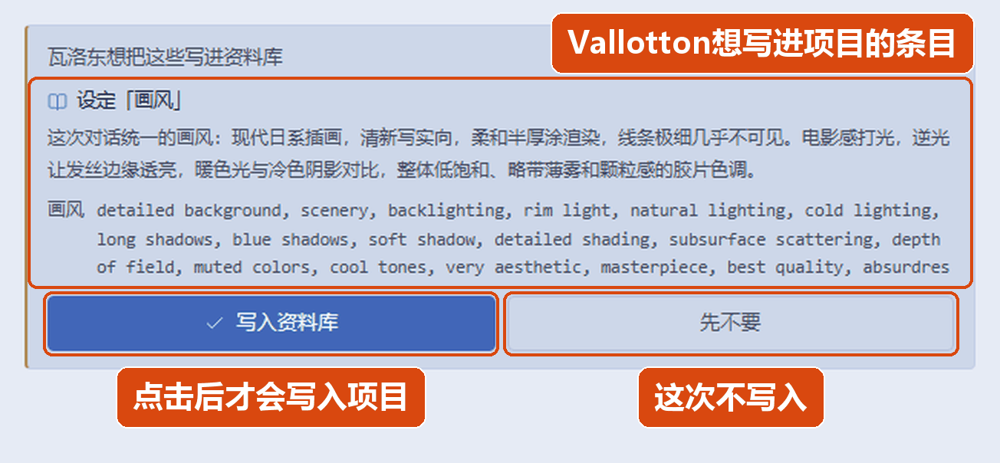
项目本身也是分层的，一个项目中的对话会继承所有祖先项目的资料库条目。在检索资料库的时候，越靠近当前对话的条目优先级越高。也就是说，优先以本对话层的条目为准，如果本对话层中没有这个条目，那么就去父级项目资料库中找，如果还找不到，才去祖先项目的资料库中找。
项目界面
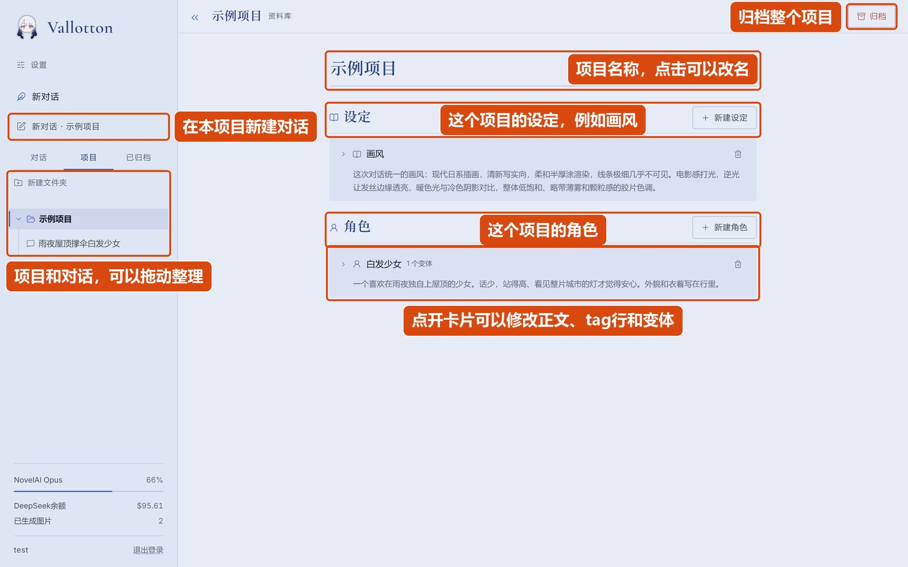
在左边栏切到「项目」标签，就能看到所有项目和里面的对话。如果你正在看某个项目，或者正在看这个项目里的某个对话，左边栏的「新对话 · 项目名」按钮会直接在这个项目里新建对话。
选中一个项目时，界面中间呈现的就不再是对话界面，而是这个项目的资料库编辑页面。这个页面分成「设定」和「角色」两栏。你可以在这里新建条目、点开卡片、修改内容、给角色添加变体、删除条目等。如果项目有嵌套结构，那么外层项目的条目也会显示在这里，但是标为「继承」，只能查看，不能修改。
页面右上角的「归档」按钮会把整个项目连同里面的对话和子项目一起收起来。原则上归档不会删除任何东西，在左边栏的「已归档」标签里随时可以找回来。
生成设置
「生成设置」是一组和生成图片相关的参数。每个对话都有自己的一组生成设置参数值，在右边栏里可以查看和修改。新对话的生成设置的参数一开始会用设置页里的默认值。
| 设置 | 可选范围 | 用途 |
|---|---|---|
| 出图数量 | 1-4 | 一次画几张图。 |
| 画质 | 低、中、高 | 「中」用NovelAI V5画正常大小的图，占用订阅里的V5用量。「高」用V5画更大分辨率的图，每张要额外花NovelAI账号里的点数（Anlas）。「低」用上一代模型，不占V5的用量。 注意，中、高质量只有分辨率的区别，但是低质量会换模型，效果会大大降低。一般只有V5用量用完了实在没招的时候才会用到低质量。 |
| 反思轮数 | 0-10 | 每张图画完以后，最多反思几轮，见反思。设为0就是不反思 |
| 连续生成 | 1-20 | 一句话连着画多少张图，见连续生成。设为1就是不连续生成。 |
| 自动修改 | 关闭、仅修改、全部 | Vallotton想修改项目资料库时要不要先询问。「关闭」表示每次都询问；「仅修改」表示修改已有的条目时不询问、新建条目时询问；「全部」表示一律不询问。 |
| 常驻参考 | 开、关 | 之前发送的参考图要不要一直放在上下文中，见输入框和参考图。 |
反思
如果开了反思功能，那么每张图画完之后，Vallotton都会自己先看一遍，对照你的要求检查有没有画错的地方，比如说了戴眼镜结果没戴、少画几个人物、透视关系错误之类的。如果发现了问题，它会修改以后重画，直到满意或者反思轮数用完为止。
在右边栏的生成设置里把「反思轮数」调到1以上，就打开了反思功能。画的过程中，对话里会显示「正在端详这张画」「正在重画」等进度。重画出来的图会替换掉之前的图。在重画过程中，如果打断生成，那么就会以重画前的输出作为结果。
反思的时候，Vallotton也可能顺手修改资料库里的条目，比如发现某个tag写得不准。这一轮里对资料库的所有修改，都要等反思结束以后才会写进资料库；如果在重画过程中打断生成，那么这次重画对资料库的修改也不会保留。
快捷短语
快捷短语是预先写好的常用句子，比如「这幅图的画风使用日式数字插画画风」这样的规定画风的句子。你可以在右边栏或者设置页里新建和编辑快捷短语。在右边栏中点一下快捷短语它就会被自动填进输入框。
连续生成
连续生成功能可以让Vallotton一口气画一组图，比如一个故事的好几个场景。用法是：
- 在生成设置里，把「连续生成」调到你想要的张数。
- 选中一条快捷短语。被选中的这条快捷短语会被标为「连续生成时自动发送」。通常可以是一个过渡性的句子，比如「接着画下一个场景」。
- 像平时一样发出第一句话。
第一张图画完以后，Vallotton会自动替你发送那条快捷短语，接着画下一张，一直画到设定的张数为止。这个过程在后台进行，即使关掉浏览器也不会中断；在设置页的「正在进行」里可以看到还有几张没画完。在连续生成的过程中，如果想中途停止连续生成，点击消息栏的停止按钮就可以。
检查器
如果你想知道Vallotton的某一轮内部是如何工作的，那么可以点击消息下面的「检查」按钮，打开检查器。检查器中会显示这一条消息的全部内部工作记录。
检查器里的内容比较多，平时通常用不到。当你觉得画出来的东西和你说的不一样时，可以打开它，看看是哪里理解偏了。
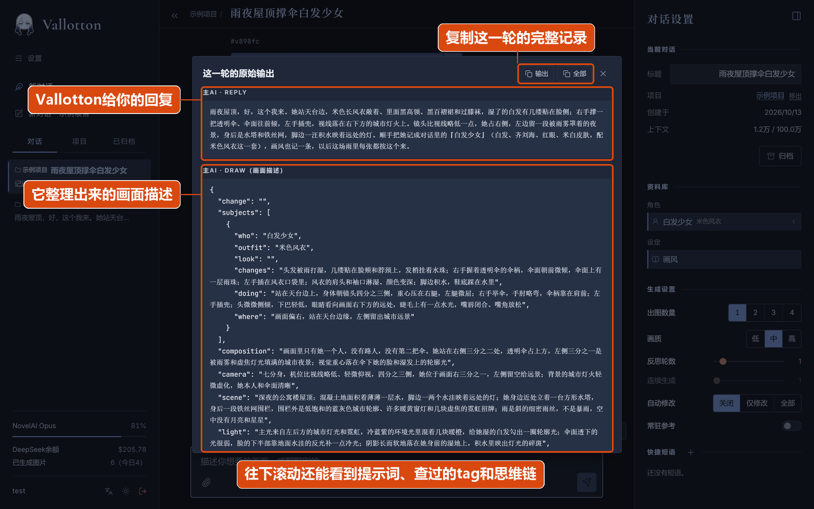
设置页
点左边栏最上面的「设置」进入设置页。设置页的第一行可以切换语言和配色；下面可以配置生成选项的默认值，管理快捷短语，以及检查各种后台状态。
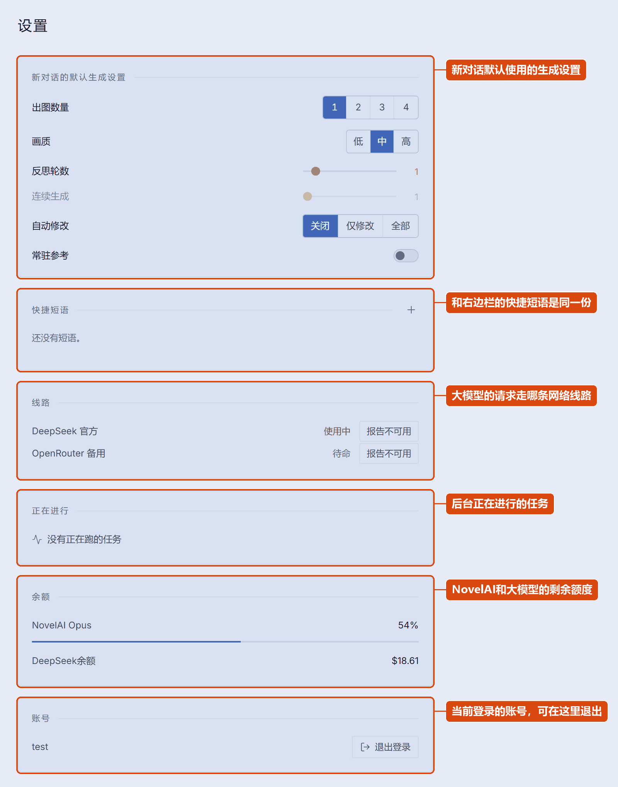
在手机上用
Vallotton可以当作手机app来用。用手机浏览器打开Vallotton的地址，选择「安装并创建快捷方式」（不同浏览器不一样，也可能是「添加到主屏幕」、「安装」之类的）。之后会在主屏幕上创建一个app图标，可以和普通的app一样使用。
手机上的界面和电脑上大体相同。左上角的按钮（或者从左往右滑动）打开左边栏，输入框右上方的按钮打开右边栏。手机上的左边栏没有用户名那一行，切换语言和配色在设置页的第一行。
需要注意的是，如果是按快速上手在自己电脑上运行的Vallotton，那么只能在这台电脑上打开。要想在手机上用，需要按部署教程把它部署到一台服务器上。（除非你有什么特别的魔法能在局域网下让手机访问电脑的本地服务）。
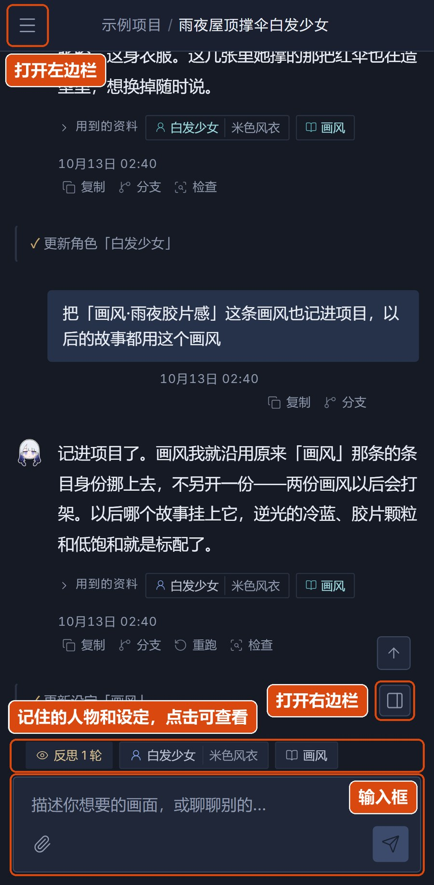
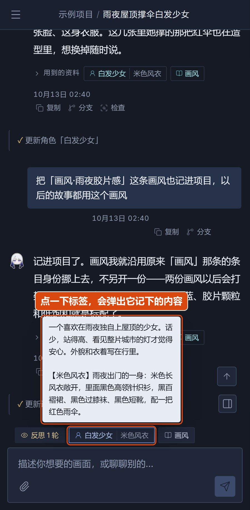
MCP
部署到服务器上的Vallotton可以额外打开一个接口，让别的程序调用它（主要是为了给coding agent使用），比如发一句话、拿回画好的图等等。这个接口用的是一套魔改版的简易协议，不是标准的Model Context Protocol，所以Claude Desktop、Cursor这类客户端不能直接连接。具体做法见部署教程的MCP一节。